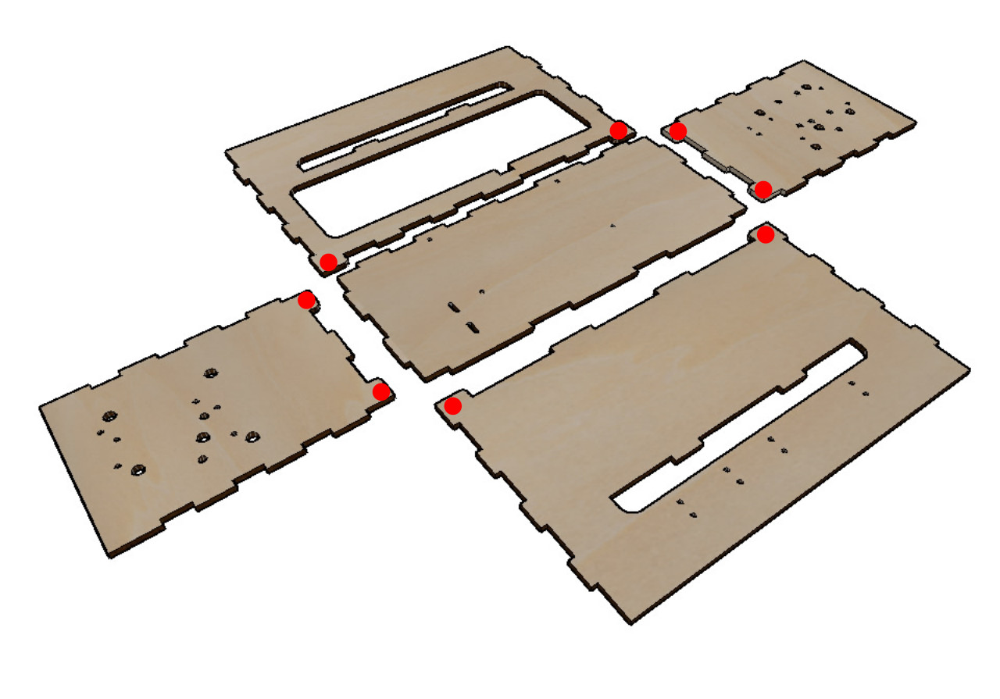

Building Guide¶
This building guide is divided into 3 main sections:
External Assembly
Internal Assembly
Electronics Assembly
External Assembly¶
Frame¶
Material needed:
All the plywood frame pieces:
Face
Back
Bottom
Left
Right
Make sure the holes in the plywood pieces are arranged like the following picture. The rounded pegs will become feet, so make sure they are facing downward. These pegs are identified with red dots.
You can now glue the pieces together with wood glue, but you may want to wait until the internal components are assembled. This can make it easier to work with assemblies like the guide rods. So, for now just snap the 5 pieces together and tape the corners as seen in taped:

[TODO: collage of trap blockers??]
Internal Assembly¶
Y-direction Motor Assembly¶
Materials needed:
- Y motor support:

2 M3 washers
2 M3-12 screws
2 Nylstop M3 Hex nuts
4 M3-8 screws
1 GT2 pulley, 20 teeth, 5mm
1 Nema 17 motor
Add the Y Motor support to the rotating end of the Nema motor, with the motor power connector facing upwards as shown.

Place the hex nuts into the hex nut grooves in the 3d-printed Y motor support.
Attach the Y-motor assembly to the frame. Take care that it is facing in the correct direction relative to the holes in the bottom of the frame, as shown.
[TODO: Complete section]
Electronics Assembly¶
[TODO: Complete section]